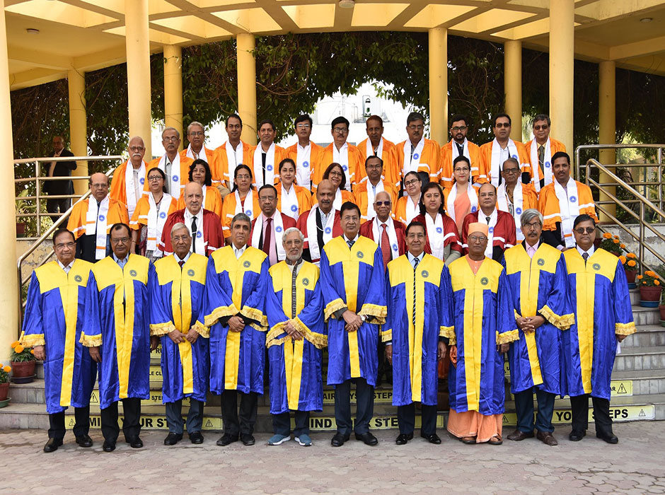

home> about> international-collaboration
International Collaborations
- MOU signed with University of Massachusetts, Lowell for a variety of joint academic and education activities
such as :-
- Summer undergraduate experiences;
- Dual degree programs where selected HITK students on completion of their B.Tech. degree will
be able to proceed to UML to complete their MS;
- Faculty and student exchanges and opportunities for paid internships;
- Cooperation in academic and research programs in nanotechnology oengineering, including joint
Ph.D. programs;
- Agreement signed with New Jersey Institute of Technology (NJIT), NJ, USA with the
following objectives to provide a meaningful learning and research experience to
undergraduate students that will stimulate interest both in seeking a better future,
performing research and pursuing graduate studies.
- MOU signed with College of Natural Science, Sungkyunkwan University, Korea
with the following objectives :-
- Reciprocal exchange of faculty, Staff and students;
- Engagement in joint research projects;
- Fostering exchange of academic publications and information;
- Promotion of other academic activities.
-
Negotiations are on with the University of Sussex, UK for academic collaboration.
